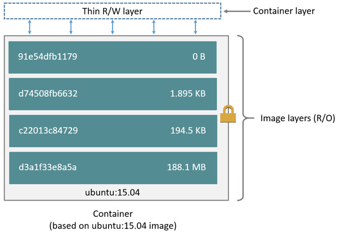

- 00 开篇词 量身定制你的持续交付体系.md
- 01 持续交付到底有什么价值？.md
- 02 影响持续交付的因素有哪些？.md
- 03 持续交付和DevOps是一对好基友.md
- 04 一切的源头，代码分支策略的选择.md
- 05 手把手教你依赖管理.md
- 06 代码回滚，你真的理解吗？.md
- 07 “两个披萨”团队的代码管理实际案例.md
- 08 测试环境要多少？从现实需求说起.md
- 09 测试环境要多少？从成本与效率说起.md
- 10 让环境自己说话，论环境自描述的重要性.md
- 11 “配置”是把双刃剑，带你了解各种配置方法.md
- 12 极限挑战，如何做到分钟级搭建环境？.md
- 13 容器技术真的是环境管理的救星吗？.md
- 14 如何做到构建的提速，再提速！.md
- 15 构建检测，无规矩不成方圆.md
- 16 构建资源的弹性伸缩.md
- 17 容器镜像构建的那些事儿.md
- 18 如何做好容器镜像的个性化及合规检查？.md
- 19 发布是持续交付的最后一公里.md
- 20 Immutable！任何变更都需要发布.md
- 21 发布系统一定要注意用户体验.md
- 22 发布系统的核心架构和功能设计.md
- 23 业务及系统架构对发布的影响.md
- 24 如何利用监控保障发布质量？.md
- 25 代码静态检查实践.md
- 26 越来越重要的破坏性测试.md
- 27 利用Mock与回放技术助力自动化回归.md
- 28 持续交付为什么要平台化设计？.md
- 29 计算资源也是交付的内容.md
- 30 持续交付中有哪些宝贵数据？.md
- 31 了解移动App的持续交付生命周期.md
- 32 细谈移动APP的交付流水线（pipeline）.md
- 33 进阶，如何进一步提升移动APP的交付效率？.md
- 34 快速构建持续交付系统（一）：需求分析.md
- 35 快速构建持续交付系统（二）：GitLab 解决代码管理问题.md
- 36 快速构建持续交付系统（三）：Jenkins 解决集成打包问题.md
- 37 快速构建持续交付系统（四）：Ansible 解决自动部署问题.md
- 持续交付专栏特别放送 答疑解惑.md
- 持续交付专栏特别放送 高效学习指南.md
- 结束语 越痛苦的事，越要经常做.md
17 容器镜像构建的那些事儿
随着容器发布越来越流行，持续交付最后一公里的产物，逐渐由之前的代码包变成了容器镜像。然而，容器镜像构建与传统的代码构建有很多不同之处，也增加了很多新鲜的技术领域和内容需要我们去学习。
所以，今天我们就一起来聊聊容器镜像构建的那些事儿，打通容器镜像构建的各个环节。
什么是容器镜像？
在虚拟机时代就有镜像的说法，当我们创建一个虚拟机时，通常会去网上下载一个ISO格式的虚拟机镜像，然后经过 VirtualBox 或者 VMware 加载，最终形成一个包含完整操作系统的虚拟机实例。
而容器镜像也是类似的意思，只不过它不像虚拟机镜像那么庞大和完整，它是一个只读的模板，一个独立的文件系统，包含了容器运行初始化时所需要的数据和软件，可以重复创建出多个一模一样的容器。
容器镜像可以是一个完整的 Ubuntu 系统，也可以是一个仅仅能运行一个 sleep 进程的独立环境，大到几 G 小到几 M。而且Docker 的镜像是分层的，它由一层一层的文件系统组成，这种层级的文件系统被称为 UnionFS。下图就是一个 Ubuntu 15.04 的镜像结构。

引用自 docker docs：images and layers
{kind=link}
图中的镜像部分画了一个锁的标记，它表示镜像中的每一层都是只读的，只有创建容器时才会在最上层添加一个叫作Container layer的可写层。容器运行后的所有修改都是在这个可写层进行，而不会影响容器镜像本身。
因为这一特性，创建容器非常节省空间，因为一台宿主机上基于同一镜像创建的容器只有这一份镜像文件系统，每次创建多出来的只是每个容器与镜像 diff 的磁盘空间。而虚拟机每增加一个实例，都会在宿主机上占用一个完整的镜像磁盘空间。
什么是 Dockerfile
了解了什么是容器的镜像，以及与虚拟机镜像的区别后，可以清楚地看到：容器都是基于镜像产生的，没有镜像就没有容器。那么，我们应该怎么创建一个镜像呢？
Docker Hub上提供了非常多的常用镜像，比如 Ubuntu 镜像，CentOS 镜像，或者仅仅是一个包含 Java 程序的镜像，你可以通过 docker pull 命令把它们下载到本地使用。当然你也可以自己在本地通过docker build 制作镜像。
如果你想要修改或者加工这些镜像，可以找到文件系统中对应的 layer 目录，然后进行修改。按照这种方式操作的话，如果我要添加一个文件还好说，但如果要安装一个软件，那就要拷贝一堆文件到各个目录中，相当麻烦。
如果真要这样操作的话，容器镜像也就不会有今天如此庞大的用户群体了。Docker帮我们解决这个问题的方式，就是提供了Dockerfile。
简单来说，Dockerfile 第一个好处就是，可以通过文本格式的配置文件描述镜像，这个配置文件里面可以运行功能丰富的指令，你可以通过运行 docker build 将这些指令转化为镜像。
比如，我要更改 Ubuntu 镜像安装一个 Vim 编辑器，那么我的 Dockerfile 可以这样写：
FROM ubuntu
RUN apt-get install vim -y
其中，FROM 指令说明我们这个镜像需要继承 Ubuntu 镜像，RUN 指令是需要在镜像内运行的命令。
因为 Ubuntu 镜像内包含了 apt-get 包管理器，所以相当于启动了一个 Ubuntu 镜像的容器，然后在这个容器内部安装 Vim。这期间会产生一个新的 layer，这个新的 layer 包含安装 Vim 所需的所有文件。
运行docker build 后会产生一个新镜像，我们可以通过 docker tag 给这个新镜像起一个名字，然后 docker push 到仓库，就可以从仓库下载这个镜像了，后续的其他镜像也可以继承这个镜像进行其他改动。
镜像就是这样通过 Dockerfile 一层一层的继承，不断增加新的内容，直到变成你想要的样子。
Dockerfile 的另外一个好处就是可以描述镜像的变化，通过一行命令就可以直观描述出环境变更的过程，如果再通过 git 进行版本控制，就可以让环境的管理更加可靠与简单。
了解了Dockerfile之后，你就可以利用它进行代码更新了，最主要的步骤就以下三步：
-
将代码包下载到构建服务器；
-
通过Dockerfile 的 ADD 命令将代码包加载到容器里；
-
Docker build 完成新的镜像。
镜像构建优化
原则上，我们总是希望能够让镜像保持小巧、精致，这样可以让镜像环境更加清晰，不用占用过多空间，下载也会更快。
那么，如何做好镜像的优化呢？你可以从3个方面入手：
-
选择合适的 Base 镜像；
-
减少不必要的镜像层的产生；
-
充分利用指令的缓存。
为什么第一条说要选择合适的Base镜像呢？因为，这是最直接和有效的方式。
举个例子就更好理解了。比如，我只想运行一个 Java 进程，那么镜像里就只有这个 Java 进程所需的环境就可以了，而没必要使用一个完整 Ubuntu 或者 CentOS 镜像。
关于第二点，减少不必要的镜像层，是因为使用 Dockerfile 时，每一条指令都会创建一个镜像层，继而会增加整体镜像的大小。
比如，下面这个 Dockerfile：
FROM ubuntu
RUN apt-get install vim -y
RUN apt-get remove vim -y
虽然这个操作创建的镜像中没有安装 Vim，但是镜像的大小和有 Vim是一样的。原因就是，每条指令都会新加一个镜像层，执行install vim 后添加了一层，执行remove vim 后也会添加一层，而这一删除命令并不会减少整个镜像的大小。
因此，当我们编写 Dockerfile 时，可以合并多个 RUN 指令，减少不必要的镜像层的产生，并且在之后将多余的命令清理干净，只保留运行时需要的依赖。就好比我买了两斤橘子，只需要把橘子肉保留下来就好，橘子皮可以直接丢掉，不用保留在房间里。
Dockerfile 构建的另外一个重要特性是指令可以缓存，可以极大地缩短构建时间。 因为之前也说了，每一个RUN都会产生一个镜像，而Docker在默认构建时，会优先选择这些缓存的镜像，而非重新构建一层镜像。比如，一开始我的 Dockerfile 如下：
FROM ubuntu
RUN apt-get install vim -y
使用一段时间之后，我发现需要添加新的特性，Dockerfile 变成了如下的样子：
FROM ubuntu
RUN apt-get install vim -y
ADD java /usr/local/java
重新 build 时，前面安装 Vim 那步可以使用缓存，而不需要重新运行。当我们需要构建一个新镜像时，这个特性非常有用，可以快速跳过前面构建通过的步骤，而不需要每次都重新构建，尤其适用于在 Docker 里面编译一些大型软件的情况，可以帮你节省大量时间。
镜像构建环境
当我们学会了使用 Dockerfile 构建镜像之后，下一步就是如何搭建构建环境了。搭建构建环境最简单的方式就是在虚拟机上安装 Docker Daemon，然后根据你所使用的语言提供的 Docker 客户端与 Docker Daemon 进行交互，完成构建。
但是，我们推崇构建环境容器化，因为我们的构建环境可能除了 Docker 外，还会有一些其他的依赖，比如编程语言、Git 等等。
上面我也分析了Docker 镜像的各种好处，那如果环境还没有实现容器化，是不是就有点说不过去了？
接下来，我们就看看构建环境如何实现容器化。一般情况下，用容器来构建容器镜像有两种方式：
-
Docker Out Of Docker（DooD）
-
Docker In Docker（DinD）
第一，Docker Out Of Docker（DooD）
这种方式比较简单，首先在虚拟机上安装 Docker Daemon，然后将你的构建环境镜像下载下来启动一个容器。
在默认情况下，Docker 客户端都是通过 /var/run/docker.sock 与 Docker Daemon 进行通信。我们在创建 Docker 实例时，把外部的 /var/run/docker.sock mount 到容器内部，这样容器内的 Docker 客户端就可以与外部的 Docker Daemon 进行通信了。
另外，你还需要注意权限问题，容器内部的构建进程必须拥有读取 /var/run/docker.sock 的权限，才可以完成通信过程。
这种方式的好处很明显，我们可以将镜像构建环境打包复用，对宿主机来说，只要安装 Docker Daemon 就可以了。但是这种方式的缺点是，内部的环境必须要与外部保持一致，不然就会报错，比如缺少库文件。此外，如果构建容器时不小心把 Docker Daemon 搞挂了，那么就会影响该宿主机上的其他容器。
为了解决这个问题，我们是否可以在容器内部使用 Docker Daemon 呢？
第二，Docker In Docker（DinD）
Docker In Docker ，就是在容器内部启动一个完整的 Docker Daemon 进程，然后构建工具只需要和该进程交互，而不影响外部的 Docker 进程。
默认情况下，容器内部不允许开启 Docker Daemon 进程，必须在运行容器的时候加上 --privileged 参数，这个参数的作用是真正取得root的权限。另外，Docker 社区官方提供了一个 docker:dind 镜像可以直接拿来使用。
这样一来，容器内部 Docker Daemon 就和容器外部的 Docker Daemon 彻底分开了，容器内部就是一个完整的镜像构建环境，是不是很神奇。
然而 DinD 也不是百分之百的完美和健壮，它也有一些关于安全和文件系统的问题。此外，因为每个容器都有独立的 /var/lib/docker 用来保存镜像文件，一旦容器被重启了，这些镜像缓存就消失了，这可能会影响我们构建镜像的性能。
通过以上两个方法，你就可以做到用容器来构建容器镜像了。
总结
今天，我针对容器镜像构建的那些事儿，和你进行了讨论。
首先，容器镜像是一个独立的文件系统，它包含了容器运行初始化时所需要的数据或软件。Docker容器的文件系统是分层的、只读的，每次创建容器时只要在最上层添加一个叫作Container layer的可写层就可以了。这种创建方式不同于虚拟机，可以极大的减少对磁盘空间的占用。
其次，Docker提供了Dockerfile这个可以描述镜像的文本格式的配置文件。你可以在Dockerfile中运行功能丰富的指令，并可以通过docker build 将这些指令转化为镜像。
再次，基于Dockerfile的特性，我分享了Dockerfile 镜像构建优化的三个建议，包括：选择合适的Base镜像、减少不必要的镜像层产生，以及善用构建缓存。
最后，用容器来构建容器镜像，主要有DooD 和 DinD 两种方案。这两种方案，各有优劣，你可以根据自身情况去选择。
思考题
-
除了上述的 DooD 和 DinD 之外，你还知道哪些其他的Docker构建方案吗？它们分别有什么特点？
-
Docker构建的缓存机制的基本规则是怎样的，如果ADD或COPY命令后是不同的文件，缓存机制会怎么处理？
欢迎你给我留言。-
© 2019 - 2023 Liangliang Lee. Powered by Vert.x and hexo-theme-book.